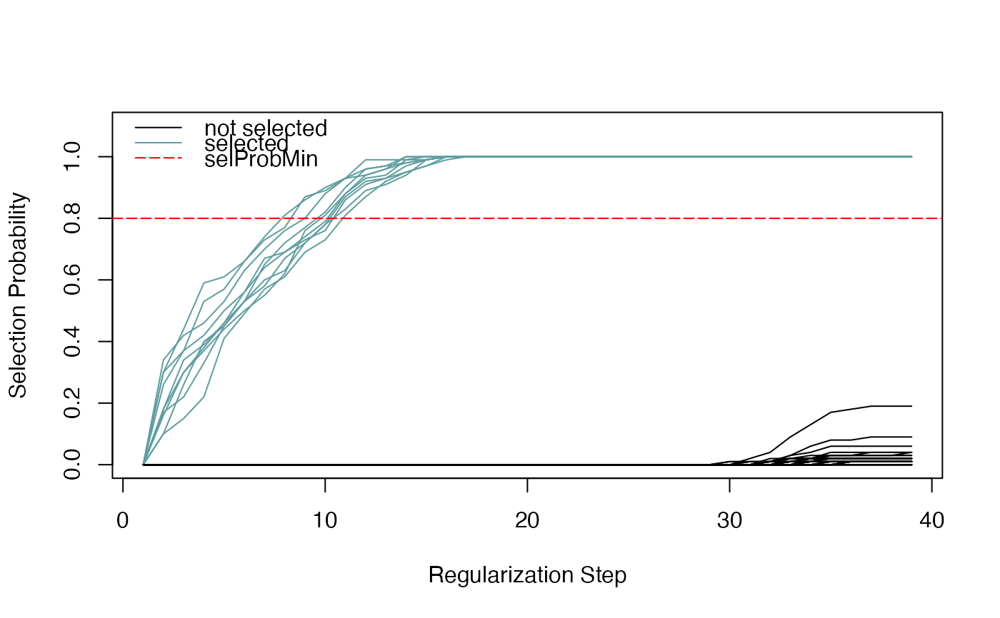

Plot the stability paths of each variable (predictor), showing the selection probability as a function of the regularization step.
Arguments
- se
the
SummarizedExperimentobject resulting from stability selection, by runningrandLassoStabSel.- selProbMin
A numerical scalar in [0,1]. Predictors with a selection probability greater than
selProbMinare shown as colored lines. The color is defined by thecolargument.- col
color of the selected predictors.
- lwd
line width (default = 1).
- lty
line type (default = 1).
- ylim
limits for y-axis (default = c(0,1.1)).
- ...
additional parameters to pass on to
matplot.
Examples
## create data set
Y <- rnorm(n = 500, mean = 2, sd = 1)
X <- matrix(data = NA, nrow = length(Y), ncol = 50)
for (i in seq_len(ncol(X))) {
X[ ,i] <- runif(n = 500, min = 0, max = 3)
}
s_cols <- sample(x = seq_len(ncol(X)), size = 10,
replace = FALSE)
for (i in seq_along(s_cols)) {
X[ ,s_cols[i]] <- X[ ,s_cols[i]] + Y
}
## reproducible randLassoStabSel() with 1 core
set.seed(123)
ss <- randLassoStabSel(x = X, y = Y)
plotStabilityPaths(ss)
